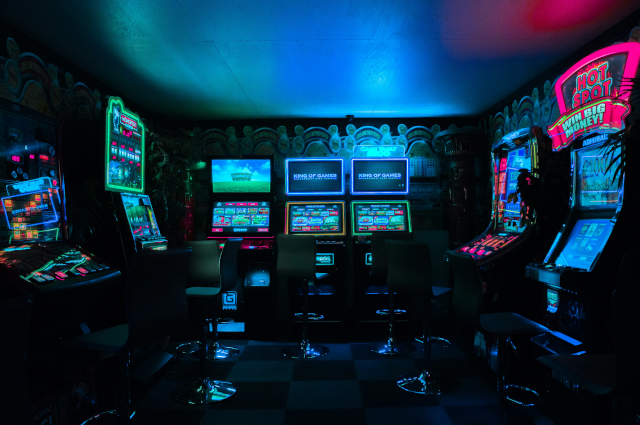

A Nostalgia das Máquinas de Fliperama

Nos anos 80 e 90, as máquinas de fliperama eram o ponto de encontro para os fãs de jogos. Localizadas em shoppings, bares e praças, essas máquinas ofereciam clássicos como Pac-Man e Street Fighter, com controles simples e som característico. Jogadores competiam para alcançar as maiores pontuações, criando uma atmosfera de diversão e interação. Hoje, essas máquinas são raras, mas ainda podem ser encontradas em arcades e museus, mantendo viva a magia de uma era de jogos no mundo físico.
O Desenvolvimento dos Jogos Antigos: A Magia da Simplicidade

Nos primórdios dos videogames, o desenvolvimento de jogos era um processo desafiador, marcado por limitações de hardware e criatividade. Programadores e designers criavam títulos com gráficos simples e mecânicas diretas, utilizando poucas cores e recursos. Jogos como Pac-Man e Tetris foram criados com códigos compactos, mas cheios de inovação. Esses jogos, embora rudimentares, conquistaram o mundo pela jogabilidade viciante e pela simplicidade envolvente. O desenvolvimento de jogos antigos, feito com esforço e criatividade, abriu caminho para a indústria de games que conhecemos hoje.